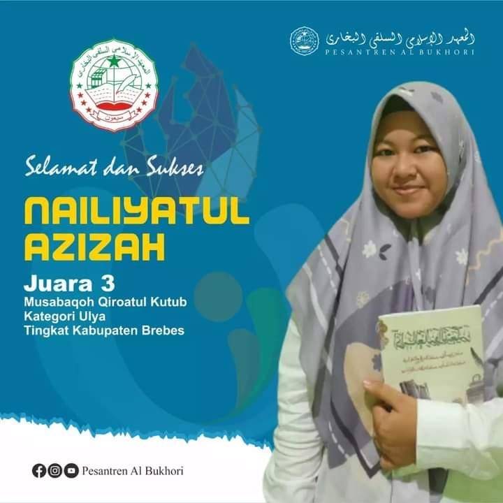
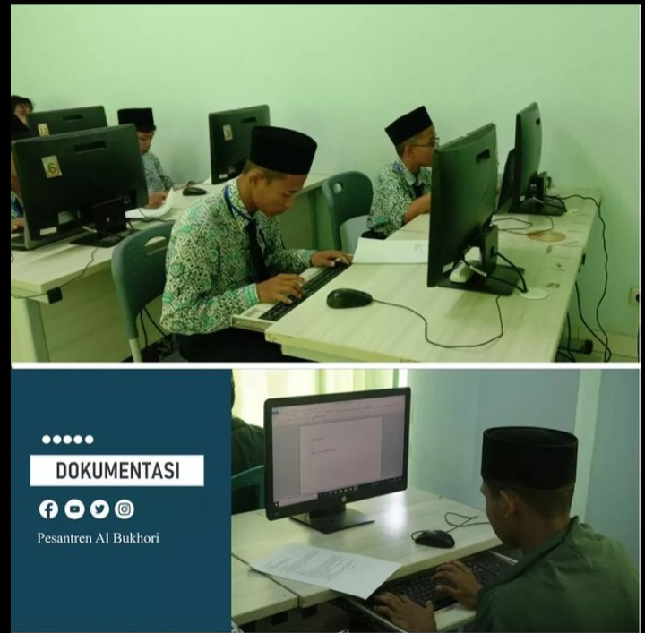
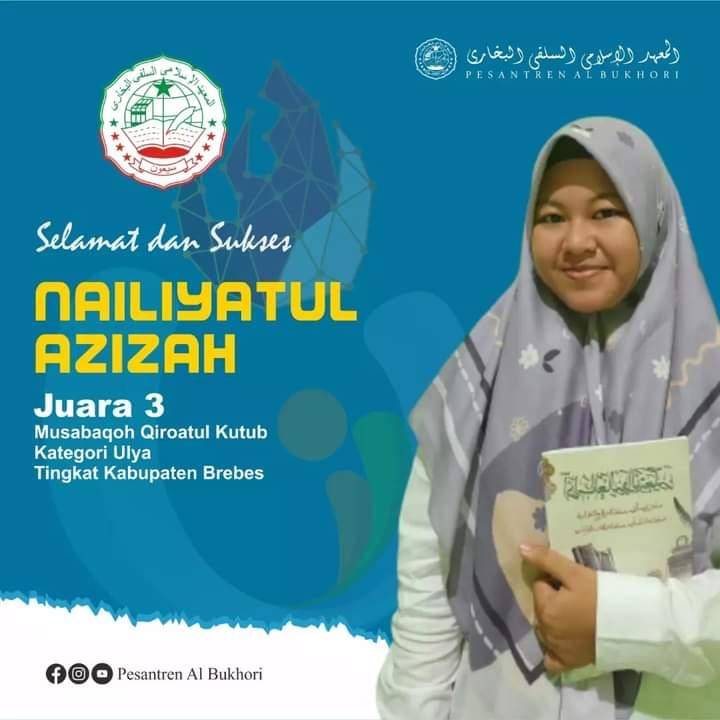
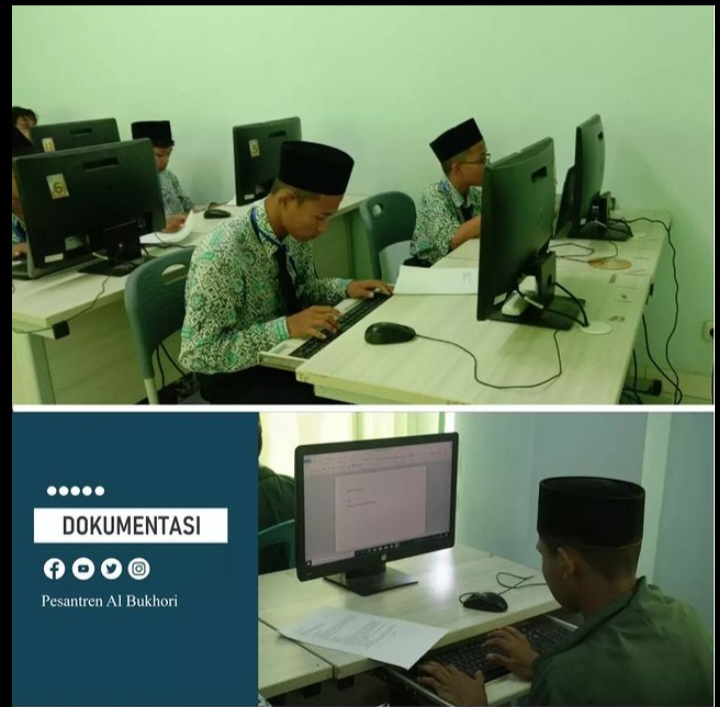

Mempersiapkan Generasi Yang Kuat dan Terpecaya (Qawiyyun Amin)
MA PLUS AL BUKHORI TANJUNG Madrasah Aliyah Plus Al Bukhori didirikan pada tahun 2015 oleh Pesantren Al Bukhori di bawah naungan hukum Yayasan AL BUKHORI BREBES, yang dipimpin oleh KH Hudalloh Karim sebagai Pembina Yayasan dan Moh. Ibrohim sebagai Ketua Yayasan, Madrasah ini berstatus swasta.
Lokasi Madrasah Aliyah Plus Al Bukhori berada di komplek Pondok Pesantren Al Islam As Salafi Al Bukhori Desa Sengon Kecamatan Tanjung Kabupaten Brebes (sebelah utara SMA N 1 Tanjung kurang lebih 250 meter). Madrasah Aliyah tersebut dipimpin oleh H. Mudrika Thoyib, M.Pd.I sebagai Kepala Madrasah dan wakilnya adalah Uli Rif’ah, M.Pd.
Read More
MA Plus Al Bukhori sebagai lembaga pendidikan dasar berciri khas Islam
perlu mempertimbangkan harapan Peserta Didik, orang tua Peserta Didik,.
lembaga pengguna lulusan madrasah dan masyarakat dalam merumuskan visinya.
lembaga pengguna lulusan madrasah MA Plus Al Bukhori juga diharapkan.
merespon perkembangan dan tantangan masa depan dalam ilmu pengetahuan dan teknologi
era informasi dan globalisasi yang sangat cepat.
MA Plus Al Bukhori ingin mewujudkan harapan dan respon dalam visi berikut:
"MEMPERSIAPKAN GENERASI YANG KUAT DAN TERPERCAYA (QOWWIYYUN AAMIIN)"
Secara umum, tujuan MA Plus Al Bukhori adalah meletakkan dasar kecerdasan, pengetahuan, kepribadian, akhlak mulia serta ketrampilan untuk hidup mandiri dan mengikuti pendidikan lebih lanjut. Bertolak dari tujuan pendidikan dasar tersebut, MA Plus Al Bukhori mempunyai tujuan sebagai berikut:

Dimulai Pukul : 07.00 - 12.00 WIB dilanjutkan 14.00 - 16.00 WIB
Membentuk Karakter Kepeminpinan yang Kowiyyun Amiin
Mewujudkan Jiwa Santri Pramuka yang unggul,Berbprestasi serta berbudi pekerti,membentuk mental baja dan jiwa yang korsa,memposisikan anggota pramuka tidak ada perbedaan posisi meupun jabatan.
Kegiatan belajar mengajar dari bidang Formal dan Bidang nonformal (Madrasah Diniyah)
Ilmu Komputer dan Pertanian Hidroponik

1.Sholat Jamaah(Maktubah dan Dluha)
2.Takhfid Alqur’an,
3.Hafalan Alimriti dan Alfiyah ibnu malik
4.sholawat dan rebana
5.Kaligrafiv
6.Pembinaan Bahasa Inggris Dan bahasa arab
7.Pembinaan Entrepreneurship
8.Melatih organisasi
9.Reboisasi
10.Demokrasi
11.PMR
12.Beasiswa Bagi SISwa
13.Seni Bela Diri
14.Dan BuletinPlural
 




+62852-2996-3126

+62878-3010-9384
+62856-4282-4131